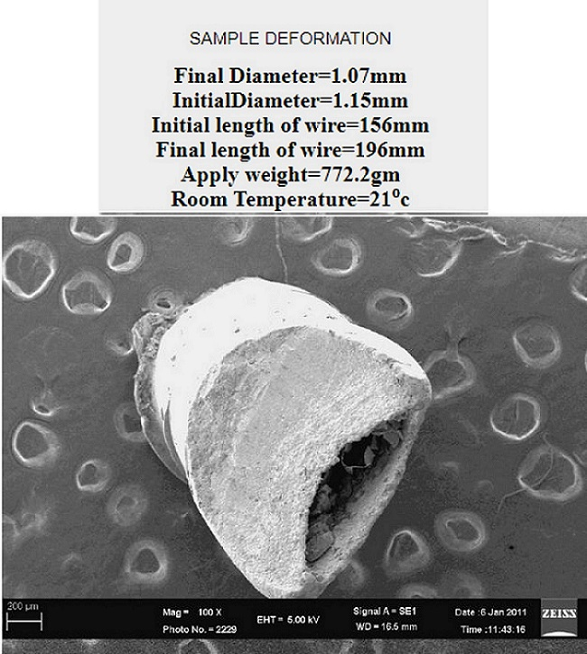
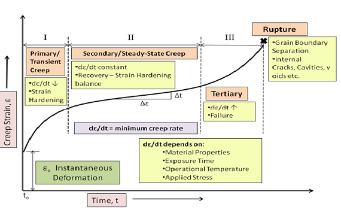

PROCEDURE & CONTROLS
Current Step:
Select a specimen or drag it onto the apparatus.
Specimen Selection:
Click a specimen or drag it
Obstacle Distance = 0.60 μm
Obstacle Distance = 0.88 μm
Obstacle Distance = 1.10 μm
Ready for specimen / load
Sample Dimensions

CREEP TESTING APPARATUS
OUTPUT & OBSERVATIONS
STATUS: READY
OBSTACLE DISTANCE (λ): None
INITIAL LENGTH (L₀): 156 mm
INITIAL DIAMETER (d₀): 1.15 mm
APPLIED WEIGHT: 772.2 gm
ROOM TEMPERATURE: 21°C
CURRENT WIRE LENGTH: 156.0 mm
NORMALIZED TIME: 0.000
CURRENT STRAIN ε: 0.00000
FINAL STRAIN ε: —
Results
| Time (normalized) | Strain ε (dimensionless) |
|---|---|
| Complete the experiment to populate the table. | |
Result Graph
The strain–time graph will appear after completion when you click SHOW RESULT.
